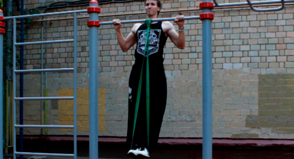
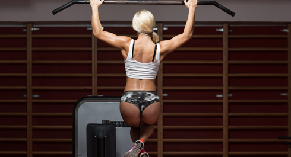

Today is a very special day, because today we gonna talk about learning how to do pull-ups from the scratch. If you can't do regular pull-ups yet, then this is right what you need! If you can, then you will still be able to find some interesting things along the way!
Let's start from the main point. The only reason why you cannot do any pull-up on the bar is because your muscles are too weak to raise your weight and get your chin above the bar. That is it. There are no secret techniques at all. Therefore, when we teach somebody to do his or her first pull-up, we focus on strength conditioning of main muscle groups. And we recommend to start with easier alternative pull-ups and other progression exercises.
What are progression exercises?
They are easier variations of exercise you are planning to master. They load same muscle groups, similar to the main exercise in motion. So, if you cannot do any exercise, try to find some progression exercises for it. Let's take pull-ups for example. And also let's take school course of Physics for some help.
If you look on someone doing pull-ups, when you will see that at first he brings his body up and then lowers it down. If you were good at physics in school when this will remind you something. And if not, then read carefully the following. In this case you have to use the formula to calculate the Work done by the body (A):
where:
А – total work done;
F – force required (in our case it is bodyweight (m, mass) multiplied by the free fall acceleration (g));
S – distance (range of motion).
So it is obvious that Work is connected to two parameters - body weight and distance which this body is being moved. So every single progression exercise will be perfomed via decreasing either one of this parameters. Or both of them at the same time.
Method #1 Decreasing bodyweight
Next exercises will be easier because, they decrease your bodyweight, work done and load, taken by your muscles. How we can do it? It is easy task, you just need to spread some part of weight to support (ground, rubber bands, partner etc.) Check these examples below:
Australian pull-ups
I do not know why they are called australian and what they have in common in with the homeland of kangaroos, but this exercise is perfect to strengthen your wide lateral muscles of the back if you cannot do standard pull-up. The main idea is to find the bar, not very high, and do horizontal pull-ups while your feet are on the ground. Because of that, you will decrease load on your muscles, but it will be enough to affect them.
It is important to note, that this exercise differs from standard pull-ups because of the plane of motion is horizontal and not vertical. However, it is great for the rookies and those, who want to enhance their technique in pull-ups. If don’t have any bar around you, try to use your imagination and find some alternative.
Chair pull-ups
Another great way to learn pull-ups is to make them with support (for example using a chair as support). In this way, you must follow 2 tips:
1. From training session to training session you must shift more load from your legs to your lats and arms. Because you control amount of load, it’s crucial to try your best, pulling with your back and arms.
2. You need to do a lot of reps (and 100 Days WorkOut gives this opportunity), loading your muscles .
Rubber bands assisted pull-ups
This exercise is similar to the previous one except two things. The amount of load or support is chosen not by by the amount of resistance of rubber band. The second thing is that this time the support is not static, so you have to load a lot of stabilizing muscles. However, it is still important to work hard with rubber band, so if you can do 10 pull-ups easily with this band, than try such band that will give optimal load.
Method #2. Shortening the distance
How to shorten distance in pull-ups? Try to do only one phase of exercise, for example:
Negative pull-ups
Every exercise has 2 phases: positive (when muscles are flexed) and negative (when muscles are relaxed).
If you cant do standard pull-ups (lift yourself above the bar and make controllable descent), than try to work with only one phase. Find the bar of such height, which will allow you jump and get chin above the bar. Then slowly go down (it is perfect to do 1 rep about 5-6 seconds).
Partial repetitions
We can go even futher and divide pull-ups motion in 4 phases:
1. Positive phase from dead hang to 90 degrees in elbows;
2. Positive phase from 90 degrees in elbows to chin above the bar;
3. Negative phase from chin above the bar to 90 degrees in elbows;
4. Negative phase from 90 degrees in elbows to dead hang.
Ideally, all exercises should be done in full range of motion, but that requires decent strength, so don't worry if you can't do full pull-ups yet and can do only 1/2 or 3/4 of the full range. Keep training and the strenth will come!
Secrets from Bar Masters
Everytime it seems like you have only two choices, remember, there is always a third one! Here is the same thing, if the formula does have only two parameters to change, it should not limit you!
Chin-ups
Chin-ups are a variation of standard pull-ups, when your palms are facing you. However, they are easier to do than standard pull-ups. That happens because with chin-ups your hands are in more natural, comfortable position. This allows you to involve your biceps in a better way. We have mentioned that pull-ups are great exercise for lats. But most of people, who are not training it constantly, uses incorrect pattern of movement, loading mostly their arms. That is why they demonstrate a better result in chin-ups rather in pull-ups.
We recommend you to use both grips to learn pull-ups for better results..
Proper Pulling

If you want to learn proper pull-up technique, than imagine that you pull the bar towards yourself, not yourself towards the bar.
To understand this, remember how you pulled something heavy in your life (sofa, wardrobe or something else). You grabbed it with both hands, pressed your legs and pulled it mainly by your back, not by your arms. Very same thing you must do on a bar. Our lats are bigger and stronger than our biceps.
Bar Training
Exercises on the bar are far more effective than lat pull-down or pull-ups using pull-up machine (Gravitron). Why? Because pull-ups are not only exercise, used to improve strength of your muscles, but also for your coordination. When you are pulling yourself on a real bar you learn to control your whole body, a lot of muscles involved when you move upward to stabilize you. Lat pull-down removes these muscles from work making learning process longer.
Grip strength
For many rookies there is a problem even to simply hang on a bar. Some people can have enough strength to do a couple of reps, but their grip is not good enough to continue. If you are familiar with this problem, we recommend you to add hanging on a bar for 30-120 sec (2-3 sets) after your circuit training. Do it regularly and your grip will improve significantly.